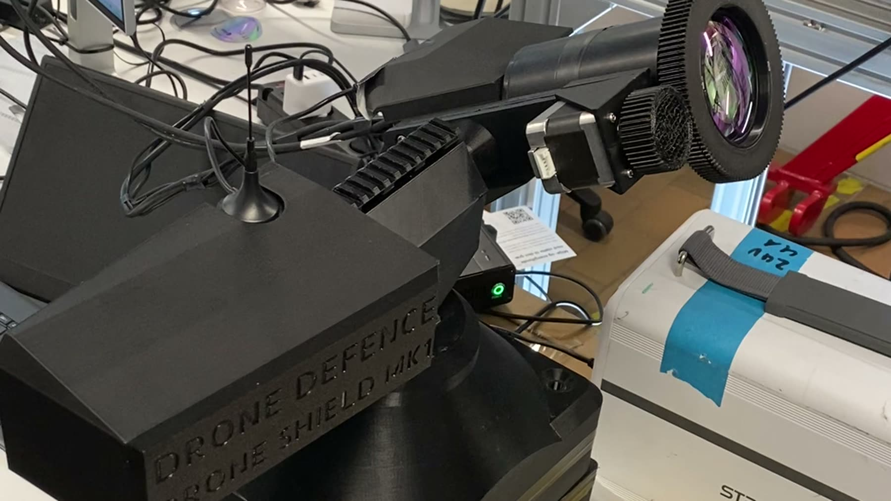

Defence costs more than attack
Interceptors run from tens to hundreds of thousands of euro per shot. The attacking drone costs a few hundred. That arithmetic does not survive contact.
Drone Defence ApS · Aarhus, Denmark
We build BeamSentry — an autonomous laser counter-UAS effector that
detects, tracks and defeats hostile drones.
No magazine. No falling debris. Only light on target.
Defence has become more expensive than attack.
A kinetic interceptor costs up to half a million euro per shot against a drone worth a few hundred — and falling rounds rule it out anywhere near people. Jamming does not touch autonomous or cabled airframes. Magazines run dry against swarms.
BeamSentry replaces the round with light. Cost per engagement falls to a few euro of electricity, the magazine is effectively unlimited, and there is nothing to fall out of the sky.
Small drones are the fastest-growing asymmetric threat to military operations and to critical infrastructure. Every established countermeasure loses on one of four axes.
Interceptors run from tens to hundreds of thousands of euro per shot. The attacking drone costs a few hundred. That arithmetic does not survive contact.
Autonomous and fibre-cabled drones ignore the RF link entirely. Jamming also degrades friendly communications in the same airspace.
Kinetic systems carry a finite number of rounds. Against a coordinated swarm, depth of magazine is the whole engagement.
Fragments and spent rounds make kinetic interception unusable over airports, ports, energy infrastructure and crowds — exactly where drones are the problem.
“FMI considers laser-based counter-drone solutions strategically important, with growing European interest driven by their low cost per engagement and scalability against small and medium-sized UAVs.”— Jarl Petersen, Head of Section, DALO (FMI)
One product line. An autonomous laser effector that closes the chain from detection to engagement — and refuses to fire unless every gate agrees.

BeamSentry is deliberately decoupled from the detection layer. It integrates with the radar and RF sensors a site already runs, instead of forcing a full system replacement — and carries its own electro-optical and thermal sensing for the terminal engagement.
The system is being matured inside a funded national defence-innovation programme, not in isolation.
AUTOSHIELD — an autonomous C-UAS engagement system for manpower-saving protection of critical infrastructure and tactical units — was awarded through CenSec Challenges in June 2026, in a process co-judged with the Danish Defence Innovation Unit (DDIU) and Forsvarskommandoen.
The project runs from August 2026 to January 2027 as a two-partner consortium: Drone Defence ApS as project lead, and Aarhus University, Department of Mechanical and Production Engineering as research partner — contributing multibody dynamics modelling, vibration and stability analysis, and scientific verification and validation.
It carries two formal demonstrations and ten milestones, each with a named deliverable and a date, against a requirement baseline held under configuration control. The exit criterion is TRL 7.
AUTOSHIELD is administered by CenSec with funding from Virksomhedsudvikling Danmark, as part of CenSec's national cluster grant 2025–2028.
A small team that designs, builds and tests in-house — mechanics, control systems, optics integration and real-time software under one roof.
Owns the system architecture, requirement register, software and vision pipeline. Mechanical engineer, and a former military aircraft mechanic at Helicopter Wing Karup.
Commercial lead on funding and end-user relations. Robotics and control systems; built the original detection, tracking and engagement software.
Leads the commercial track and contributes mechanical design, CAD, and testing and integration work. MSc Mechanical Engineering, Aarhus University.
Mechanical design, optics integration and thermal system development. MSc Mechanical Engineering.
Strategy, partnerships and engineering review. MSc Mechanical Engineering.
Ole Balling, PhD, Professor at Aarhus University MPE — scientific, modelling and test verification advisor — and Jonathan Bruun Nande, MSc, Research Engineer, on the multibody model and the hardware-in-the-loop simulation environment.
And to the teams at CenSec, the Danish Defence Innovation Unit and Forsvarskommandoen, whose challenge framing and continued engagement shaped what this system has to do.
We brief qualified end users, integrators and defence stakeholders on current capability, the requirement baseline and the demonstration schedule.
contact@at-dronedefence.com